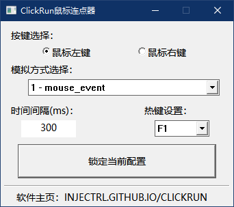

ClickRun
简单的鼠标连点器
源码主页：
https://git.dev.tencent.com/InJeCTrL/ClickRun.git
https://github.com/InJeCTrL/ClickRun.git

立即下载
可选鼠标左键、右键
SendInput与mouse_event方式实现鼠标点击
自定义两次点击时间间隔
F1~F12可选热键
因WinIo只可用于模拟PS/2鼠标单击，故弃用